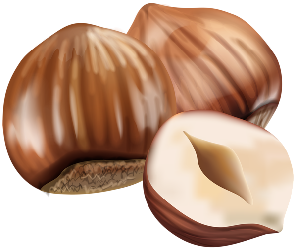

CHOCOLATE MILKSHAKE

HAZLENUT
2 cups

ICE CREAM
2 cups

MILK
1 CUP
- Step 1-
- Load the back of a teaspoon with a little of the chocolate spread and spread it in a long line from the bottom of the inside of the glass to the top. Put the rest of the chocolate spread into a bowl in the microwave or in a small saucepan over a low heat. Warm through for a few seconds just until runny and set aside.
- Step 2-
- Put the milk and chocolate ice cream into a blender. Whizz everything up until smooth then pour into your prepared glass.
- Step 3-
- Top with a layer of the marshmallows and a spoonful of whipped cream. Decorate with a drizzle of the warmed chocolate spread and a few toasted hazelnuts. Serve immediately with a straw.